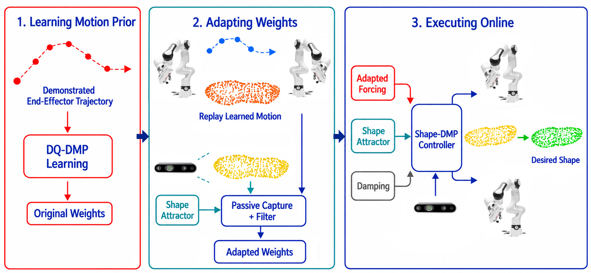

Show the robots a movement
A person guides the robot arms by hand. We record how each gripper moves and turns, then use a mathematical model called DQ-DMP to learn that movement.
Imagine bending a shoe sole with both hands. Moving your hands to the right places is only part of the task: the rubber can bend in different ways. A robot faces the same problem when handling a flexible object.
Our approach combines a movement taught by a person with a camera that watches the object’s shape. The robot arms reuse the demonstrated movement and adjust it as they work, so the goal is the right object shape, rather than just the right final position of the grippers.
The overview below connects three stages: learning a movement, adapting it to the object’s shape, and executing it with visual feedback.

A person guides the robot arms by hand. We record how each gripper moves and turns, then use a mathematical model called DQ-DMP to learn that movement.
The robots replay the learned movement while a depth camera observes the object. We record and filter the shape-control information, then adjust the model’s weights so the arms can work together around a shared shape goal.
During the task, Shape-DMP combines the learned movement with camera feedback. A “shape attractor” guides the object toward the target shape, while damping smooths the response. The task can start from a new pose or finish at a new shape.
Each experiment has two views: the real robot setup and its matching RViz visualization. RViz shows the robot motion and colored 3D representations of the object and target shapes. The first two experiments use two Franka Emika arms; the third adds a Franka Research 3 arm. An Intel RealSense D435 depth camera observes the object.
Use “Play both” to compare each pair from the same point in its 30-second clips. You can also use the individual video controls or full-screen view.
EXPERIMENT 01 · TWO ROBOTS
The arms move a rubber shoe sole along the learned path. In this example, they first pass near the demonstration’s final shape, then continue toward a different target shape. This shows that the taught movement can be reused without forcing the object to finish exactly as it did in the demonstration.
Real experiment
RViz visualization
EXPERIMENT 02 · TWO ROBOTS
The red sheet starts with a concave curve and finishes with a convex curve. To get there, it passes through a difficult, nearly flat configuration where shape control alone can get stuck. The learned turning movement helps the arms cross that configuration, and visual feedback guides the sheet toward its final shape.
Real experiment
RViz visualization
EXPERIMENT 03 · THREE ROBOTS
Three arms hold a larger rubber mat. They move it forward using the demonstrated movement, then one arm initiates a fold toward a new target shape. This extends the approach from two arms to three, with a shared view of the object’s changing shape.
Real experiment
RViz visualization
Combining a demonstrated movement with live shape feedback allows the robot arms to reach new object shapes, cross difficult configurations and coordinate a task with two or three arms. The camera’s visibility remains important: larger folds can hide parts of the object and interrupt shape tracking.